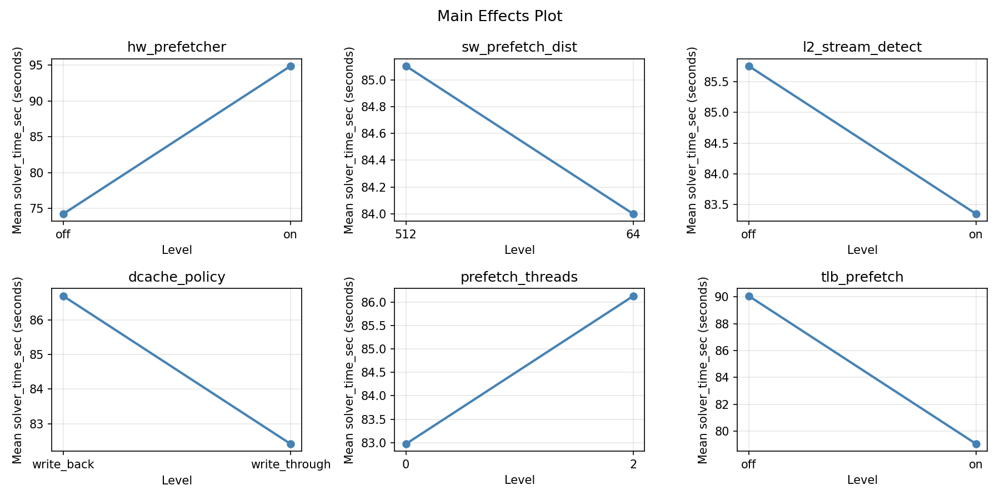
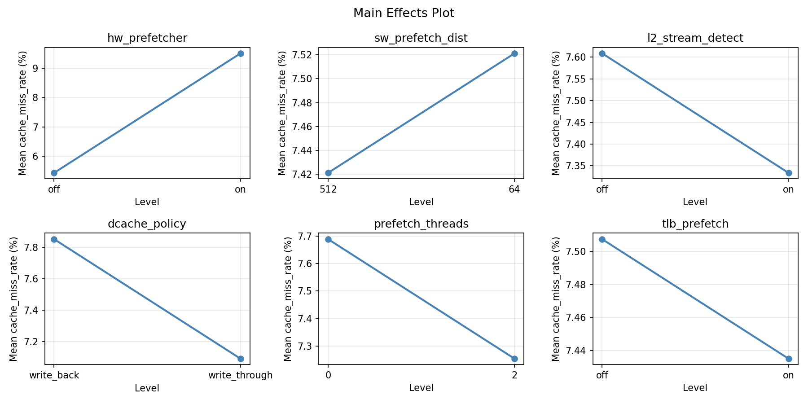
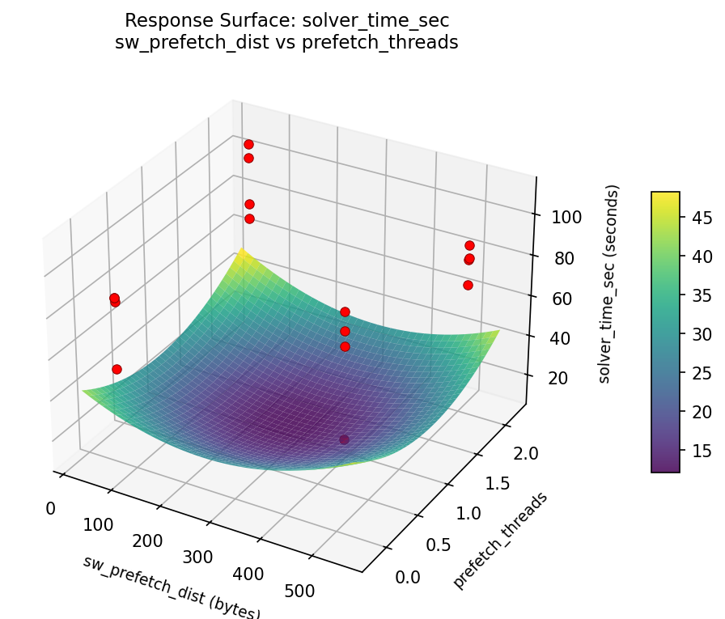

Experimental Setup
Factors
| Factor | Levels | Type | Unit |
|---|---|---|---|
| hw_prefetcher | off / on | categorical | — |
| sw_prefetch_dist | 64 – 512 | continuous | bytes |
| l2_stream_detect | off / on | categorical | — |
| dcache_policy | write_back / write_through | categorical | — |
| prefetch_threads | 0 – 2 | continuous | — |
| tlb_prefetch | off / on | categorical | — |
Fixed: processor = Xeon 8490H, workload = CFD structured grid, grid_points = 256M, iterations = 100
Responses
| Response | Direction | Unit |
|---|---|---|
| solver_time_sec | ↓ minimize | seconds |
| cache_miss_rate | ↓ minimize | % |
Experimental Matrix
The Plackett-Burman Design produces 16 runs. Each row is one experiment with specific factor settings.
| Run | Block | hw_prefetcher | sw_prefetch_dist | l2_stream_detect | dcache_policy | prefetch_threads | tlb_prefetch |
|---|---|---|---|---|---|---|---|
| 1 | 1 | on | 512 | on | write_back | 0 | off |
| 2 | 1 | off | 64 | on | write_through | 0 | off |
| 3 | 1 | off | 512 | off | write_through | 0 | on |
| 4 | 1 | on | 512 | on | write_through | 2 | on |
| 5 | 1 | off | 512 | off | write_back | 2 | off |
| 6 | 1 | on | 64 | off | write_through | 2 | off |
| 7 | 1 | off | 64 | on | write_back | 2 | on |
| 8 | 1 | on | 64 | off | write_back | 0 | on |
| 9 | 2 | on | 512 | on | write_back | 0 | off |
| 10 | 2 | on | 512 | on | write_through | 2 | on |
| 11 | 2 | off | 512 | off | write_back | 2 | off |
| 12 | 2 | off | 64 | on | write_back | 2 | on |
| 13 | 2 | off | 64 | on | write_through | 0 | off |
| 14 | 2 | off | 512 | off | write_through | 0 | on |
| 15 | 2 | on | 64 | off | write_through | 2 | off |
| 16 | 2 | on | 64 | off | write_back | 0 | on |
How to Run
terminal
$ python doe.py info --config use_cases/22_prefetch_strategy/config.json
$ python doe.py generate --config use_cases/22_prefetch_strategy/config.json --output results/run.sh --seed 42
$ bash results/run.sh
$ python doe.py analyze --config use_cases/22_prefetch_strategy/config.json
$ python doe.py optimize --config use_cases/22_prefetch_strategy/config.json
$ python doe.py report --config use_cases/22_prefetch_strategy/config.json --output report.html
Analysis Results
Generated from actual experiment runs.
Response: solver_time_sec
Pareto Chart

Main Effects Plot

Response: cache_miss_rate
Pareto Chart

Main Effects Plot

Response Surface Plots
3D surfaces fitted with quadratic RSM. Red dots are observed data points.
solver_time: sw_prefetch_dist vs prefetch_threads

cache_miss_rate: sw_prefetch_dist vs prefetch_threads

Full Analysis Output
doe analyze
=== Main Effects: solver_time_sec ===
Factor Effect Std Error % Contribution
--------------------------------------------------------------
sw_prefetch_dist 13.8375 4.4263 24.6%
l2_stream_detect -12.1125 4.4263 21.5%
prefetch_threads -9.2450 4.4263 16.4%
hw_prefetcher -8.4075 4.4263 14.9%
tlb_prefetch -7.6350 4.4263 13.6%
dcache_policy -5.0750 4.4263 9.0%
=== Interaction Effects: solver_time_sec ===
Factor A Factor B Interaction % Contribution
------------------------------------------------------------------------
hw_prefetcher l2_stream_detect -13.8375 9.5%
dcache_policy tlb_prefetch -13.8375 9.5%
hw_prefetcher sw_prefetch_dist 12.1125 8.4%
prefetch_threads tlb_prefetch -12.1125 8.4%
hw_prefetcher tlb_prefetch -10.8100 7.5%
sw_prefetch_dist prefetch_threads 10.8100 7.5%
l2_stream_detect dcache_policy -10.8100 7.5%
hw_prefetcher dcache_policy -9.2450 6.4%
l2_stream_detect tlb_prefetch -9.2450 6.4%
sw_prefetch_dist l2_stream_detect 8.4075 5.8%
dcache_policy prefetch_threads -8.4075 5.8%
sw_prefetch_dist dcache_policy 7.6350 5.3%
l2_stream_detect prefetch_threads -7.6350 5.3%
hw_prefetcher prefetch_threads -5.0750 3.5%
sw_prefetch_dist tlb_prefetch 5.0750 3.5%
=== Summary Statistics: solver_time_sec ===
hw_prefetcher:
Level N Mean Std Min Max
------------------------------------------------------------
off 8 88.7550 13.1396 69.7300 110.5000
on 8 80.3475 21.4169 50.7300 109.7600
sw_prefetch_dist:
Level N Mean Std Min Max
------------------------------------------------------------
512 8 77.6325 17.8757 50.7300 102.8700
64 8 91.4700 15.5810 69.7300 110.5000
l2_stream_detect:
Level N Mean Std Min Max
------------------------------------------------------------
off 8 90.6075 12.8466 72.7600 109.7600
on 8 78.4950 20.5634 50.7300 110.5000
dcache_policy:
Level N Mean Std Min Max
------------------------------------------------------------
write_back 8 87.0888 10.9197 72.7600 109.7600
write_through 8 82.0138 23.1898 50.7300 110.5000
prefetch_threads:
Level N Mean Std Min Max
------------------------------------------------------------
0 8 89.1737 16.2978 69.7300 110.5000
2 8 79.9287 18.9014 50.7300 101.7600
tlb_prefetch:
Level N Mean Std Min Max
------------------------------------------------------------
off 8 88.3688 12.5660 69.7300 110.5000
on 8 80.7338 21.9205 50.7300 109.7600
=== Main Effects: cache_miss_rate ===
Factor Effect Std Error % Contribution
--------------------------------------------------------------
tlb_prefetch -2.1975 0.7905 26.7%
hw_prefetcher -2.0825 0.7905 25.3%
dcache_policy -1.9475 0.7905 23.7%
l2_stream_detect -1.1025 0.7905 13.4%
sw_prefetch_dist 0.4825 0.7905 5.9%
prefetch_threads -0.4125 0.7905 5.0%
=== Interaction Effects: cache_miss_rate ===
Factor A Factor B Interaction % Contribution
------------------------------------------------------------------------
hw_prefetcher tlb_prefetch -3.0675 12.0%
sw_prefetch_dist prefetch_threads 3.0675 12.0%
l2_stream_detect dcache_policy -3.0675 12.0%
sw_prefetch_dist dcache_policy 2.1975 8.6%
l2_stream_detect prefetch_threads -2.1975 8.6%
sw_prefetch_dist l2_stream_detect 2.0825 8.1%
dcache_policy prefetch_threads -2.0825 8.1%
hw_prefetcher prefetch_threads -1.9475 7.6%
sw_prefetch_dist tlb_prefetch 1.9475 7.6%
hw_prefetcher sw_prefetch_dist 1.1025 4.3%
prefetch_threads tlb_prefetch -1.1025 4.3%
hw_prefetcher l2_stream_detect -0.4825 1.9%
dcache_policy tlb_prefetch -0.4825 1.9%
hw_prefetcher dcache_policy -0.4125 1.6%
l2_stream_detect tlb_prefetch -0.4125 1.6%
=== Summary Statistics: cache_miss_rate ===
hw_prefetcher:
Level N Mean Std Min Max
------------------------------------------------------------
off 8 8.5125 2.2260 3.4600 10.5400
on 8 6.4300 3.7405 1.6200 10.3200
sw_prefetch_dist:
Level N Mean Std Min Max
------------------------------------------------------------
512 8 7.2300 3.3916 1.6200 10.3200
64 8 7.7125 3.1287 2.2700 10.5400
l2_stream_detect:
Level N Mean Std Min Max
------------------------------------------------------------
off 8 8.0225 2.3541 2.2700 9.2700
on 8 6.9200 3.8973 1.6200 10.5400
dcache_policy:
Level N Mean Std Min Max
------------------------------------------------------------
write_back 8 8.4450 2.6124 2.2700 10.5400
write_through 8 6.4975 3.5260 1.6200 10.5400
prefetch_threads:
Level N Mean Std Min Max
------------------------------------------------------------
0 8 7.6775 3.0921 2.2700 10.5400
2 8 7.2650 3.4302 1.6200 10.5400
tlb_prefetch:
Level N Mean Std Min Max
------------------------------------------------------------
off 8 8.5700 2.2039 3.4600 10.5400
on 8 6.3725 3.7159 1.6200 10.5400
Optimization Recommendations
doe optimize
=== Optimization: solver_time_sec ===
Direction: minimize
Best observed run: #10
hw_prefetcher = off
sw_prefetch_dist = 512
l2_stream_detect = off
dcache_policy = write_through
prefetch_threads = 0
tlb_prefetch = on
Value: 50.73
Factor importance:
1. dcache_policy (effect: -12.0, contribution: 27.1%)
2. prefetch_threads (effect: -11.0, contribution: 24.8%)
3. l2_stream_detect (effect: -8.8, contribution: 19.8%)
4. sw_prefetch_dist (effect: 8.3, contribution: 18.6%)
5. tlb_prefetch (effect: -2.5, contribution: 5.6%)
6. hw_prefetcher (effect: 1.8, contribution: 4.1%)
=== Optimization: cache_miss_rate ===
Direction: minimize
Best observed run: #4
hw_prefetcher = on
sw_prefetch_dist = 512
l2_stream_detect = on
dcache_policy = write_through
prefetch_threads = 2
tlb_prefetch = on
Value: 1.62
Factor importance:
1. dcache_policy (effect: -2.5, contribution: 38.1%)
2. prefetch_threads (effect: -1.9, contribution: 28.6%)
3. tlb_prefetch (effect: -1.2, contribution: 19.1%)
4. sw_prefetch_dist (effect: 0.7, contribution: 11.1%)
5. l2_stream_detect (effect: 0.1, contribution: 2.0%)
6. hw_prefetcher (effect: 0.1, contribution: 1.2%)